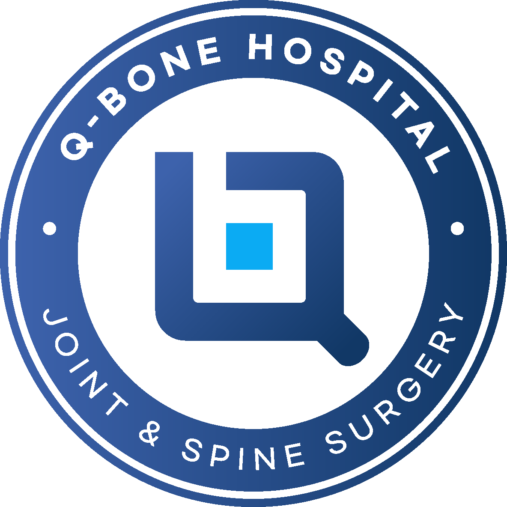

정밀 진단
증상과 검사 결과를 함께 살펴 통증의
원인을 구체적으로 확인합니다.
통증 때문에 미뤄 두었던 일상의 순간들을
다시 누릴 수 있도록 회복의 여정을 함께합니다.
Q본병원은
관절과 척추의 통증을 세심하게 살피고
건강한 일상을 되찾도록 돕습니다.
치료는 정확한 진단에서 시작되고 일상의 복귀에서 완성됩니다.
큐본병원은 환자에 맞는 치료를 함께 선택합니다.
증상과 검사 결과를 함께 살펴 통증의
원인을 구체적으로 확인합니다.
가능한 치료 방법과 각각의 차이를
환자가 이해하기 쉽게 설명합니다.
비수술 치료부터 필요한 경우
수술까지 환자의 상태에 맞춰 계획합니다.
치료 이후에도 기능 회복과
일상 복귀를 위한 재활을 연결합니다.

· 관절, 정형외과
큐본의 공간
환자와 보호자가 진료 전후 편안하게 머무르며
잠시 휴식을 취할 수 있도록 마련한 공간입니다.
방송과 언론에 소개된 큐본병원의 진료 이야기와
의료진이 전하는 관절·척추 건강 정보를 만나보세요.